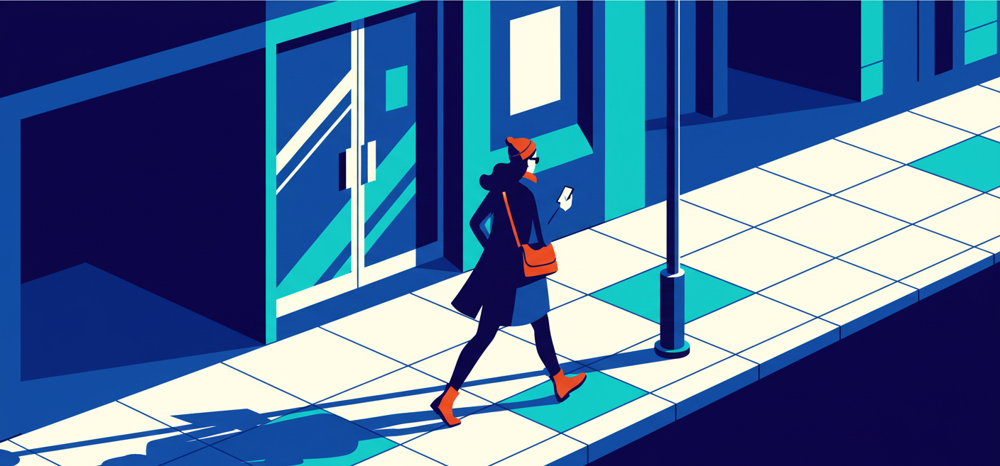
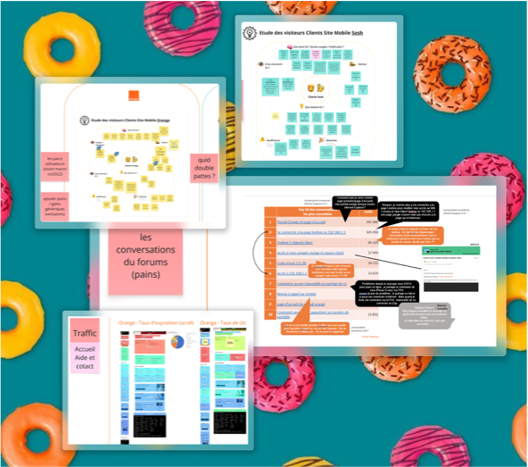
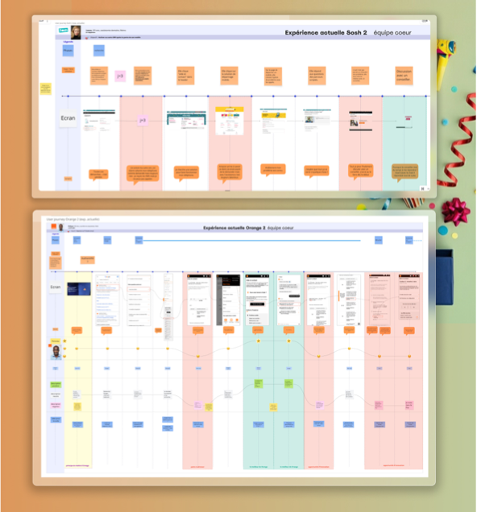
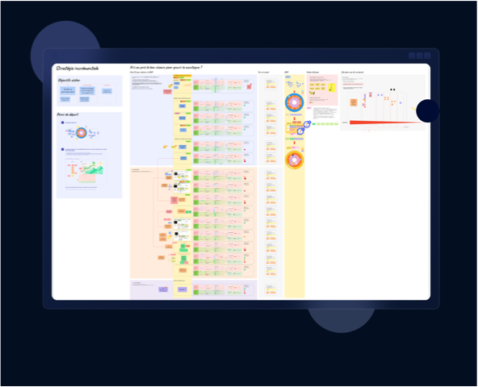

01
Kick-off - core team
Consolidation and analysis of all existing data; scoping of perimeter, stakes and risks; structuring the way of working and the timeline; validation of workshops and deliverables.

Two brands. Two architectures. Two logics. A mandate to converge - fast, cleanly, without breaking everything. This project is about moving from a theoretical vision to a testable product trajectory, by making the right exclusion choices as much as the right inclusion ones.
When I joined the project, Orange and Sosh each had their own digital support system: two architectures, two SEO logics, two contact journeys, two ways of integrating Djingo (Orange's in-house AI), and two FAQ systems.
A target convergence vision existed - but it was theoretical, long-term, and poorly sequenced. Meanwhile: strong pressure to reduce inbound contacts, a strategic SEO challenge, and massive content redundancy across both brands.
The risk was clear. Diving into a large-scale convergence project without first validating the foundational building blocks.
Design thinking coach and design strategist within the transformation department, in a cross-functional alignment and decision-structuring posture. Concretely:
I did not lead development, but I structured the product trajectory.

Conclusion: we could not tackle everything at once. Smart sequencing was essential.
A sequenced approach to validate foundational building blocks before moving towards broader convergence.
Consolidation and analysis of all existing data; scoping of perimeter, stakes and risks; structuring the way of working and the timeline; validation of workshops and deliverables.
Workshops with key knowledge-holding stakeholders - customer support, data and sales teams; prioritisation of high-impact ideas; refinement of journeys and opportunity moments.
Identification and prioritisation of features by value and feasibility, followed by the definition of the test strategy.


Mapping of existing and target user journeys with customer support stakeholders, including advisors and phone agents.
High-impact, low-risk building blocks formed the first increment.
These features were potentially powerful but technically heavy and risky at this stage. Including them would have jeopardised the trajectory.
Each card defined a clear hypothesis, a validation method and success criteria.
The Orange/Sosh convergence was initially envisioned as a big bang, with a high risk of reopening trade-offs at every step.
The trajectory was resequenced into V01 and V02, with exclusion decisions documented as carefully as inclusions.
The full team could commit to a shared vision and move forward without restarting the scope debate at each stage.
I didn't correct the team's blind spots head-on. I built a process that would let reality surface on its own.
That's what I don't know how to put in a portfolio.
Deux marques. Deux architectures. Deux logiques. Un mandat : converger rapidement et proprement, sans tout casser. Ce projet consiste à passer d'une vision théorique à une trajectoire produit testable, en faisant autant les bons choix d'exclusion que d'inclusion.
À mon arrivée sur le projet, Orange et Sosh disposaient chacun de leur propre système d'assistance digitale : deux architectures, deux logiques SEO, deux parcours de contact, deux façons d'intégrer Djingo (l'IA interne d'Orange) et deux systèmes de FAQ.
Une vision cible de convergence existait, mais elle était théorique, pensée à long terme et mal séquencée. En parallèle : une forte pression pour réduire les contacts entrants, un enjeu SEO stratégique et une redondance massive des contenus entre les deux marques.
Le risque était clair. Se lancer dans une convergence à grande échelle sans avoir d'abord validé les briques fondatrices.
Coach en design thinking et design strategist au sein du département transformation, dans une posture d'alignement transverse et de structuration de la décision. Concrètement :
Je n'ai pas piloté le développement, mais j'ai structuré la trajectoire produit.
Conclusion : nous ne pouvions pas tout traiter à la fois. Un séquencement intelligent était essentiel.
Une approche séquencée pour valider les briques fondatrices avant d'aller vers une convergence plus large.
Consolidation et analyse de l'ensemble des données existantes ; cadrage du périmètre, des enjeux et des risques ; structuration du mode de travail et du calendrier ; validation des ateliers et des livrables.
Ateliers avec les parties prenantes détentrices de connaissances clés : service client, équipes data et commerciales ; priorisation des idées à fort impact ; affinage des parcours et des moments d'opportunité.
Identification et priorisation des fonctionnalités selon leur valeur et leur faisabilité, puis définition de la stratégie de test.
Cartographie des parcours utilisateur existants et cibles avec les parties prenantes du support client, notamment les conseillers et agents téléphoniques.
Les briques à fort impact et faible risque ont constitué le premier incrément.
Ces fonctionnalités étaient potentiellement puissantes, mais lourdes techniquement et risquées à ce stade. Les inclure aurait mis en danger la trajectoire.
Chaque carte définissait une hypothèse claire, une méthode de validation et des critères de succès.
La convergence Orange/Sosh était initialement envisagée en big bang, avec un risque fort de rouvrir les arbitrages à chaque étape.
La trajectoire a été reséquencée en V01 et V02, avec des décisions d'exclusion documentées aussi précisément que les inclusions.
L'équipe a pu s'aligner sur une vision commune et avancer sans relancer le débat de périmètre à chaque étape.
Je n'ai pas corrigé les angles morts de l'équipe frontalement. J'ai construit un processus qui permettrait à la réalité d'émerger d'elle-même.
C'est ça que je ne sais pas mettre dans un portfolio.